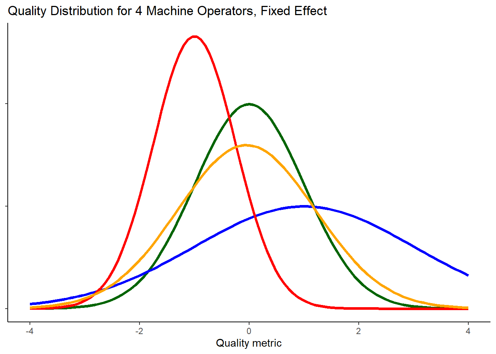

Random Factors and EMS
This page of the book seeks to introduce you to the concept of random factors, as opposed to fixed factors. Definitions of these terms and guidance about when a factor should be considered fixed or random is given. An explanation of how the F test for a factor is affected by random factors is given.
What is a Random Factor?
In the designs we have dealt with so far, we have been primarily focused on the effect of a treatment. These treatment factors have been fixed factors. The term “fixed” is meant to reinforce the fact that the levels of these factors is what we are interested in studying. The levels of these factors are chosen deliberately. They represent the population of factor levels we would like to study. If the levels of these fixed factors changed, the research question we are attempting to know would also need to change.
In contrast, levels of a random factor represent a subset of all possible levels the factor can take on. Though we would like to observe all levels of the factor, it may be impossible to do because there are too many levels. So a sample of the factor levels is taken. Actually, at least one random factor has been present in every design we have worked with: the residual factor is a random factor. The residual factor represents the effect of each observational unit. Though we would like to observe everyone in the population, most populations are too large for that to happen. So we take a random sample of people. Each observational unit is a level of the residual factor.
When a random factor is included in a study, the researcher is typically interested in measuring the variability in the random factor, rather than estimating the effect of each level in the study. Again, the residual factor is a good example. The effect of an individual is not of interest, rather estimating the mean squared error (i.e. the variability among individuals) is the focus.
Definitions
Random Factor: A factor whose levels represent a sample from a population of levels the factor has.
Fixed Factor: A factor whose levels represent the entire population (or nearly so) of values the factor can have.
Deciding whether a factor should be treated as fixed or random depends on the context and purposes of the research. Consider the following example, which illustrates how the same factor could be treated as fixed or random, depending on the situation.
Typing Speed Example
A researcher was interested in estimating the mean typing speed of college freshman at her university. A random, representative sample of 300 freshman was obtained. The researcher plans to ask each freshman to type a passage that is 200 characters long.
Her colleague points out the mean typing speed can depend on the nature of the passage freshman are asked to type. The researcher uses artificial intelligence (AI) to create 10 different passages. The 10 passages represent a sample of an infinite number of passages that could have been created. Each freshman is randomly assigned one of the 10 passages to type.
The researcher is not interested in the effect of any one passage in particular, just like she is not interested in any one student’s typing speed. Rather, the researcher can estimate how much variability in a person’s typing speed is due to variability in the passage being typed. The null hypothesis regarding the different passages is whether the variance in typing speed between the passages is zero.
The null hypothesis is similar to the null hypothesis of a fixed factor, but is conceptually and computationally different. Rather than estimating and testing each passage’s mean speed (which uses up many degrees of freedom), we simply estimate the variance in mean speeds (which uses just 1 degree of freedom).
In the example above, the passages were “randomly” sampled (or created) without consideration of content. However, if each of the 10 passages was created to represent a specific type of passage, then passage should be treated as a fixed variable. For example, one passage may incorporate many numbers. Another could have been created to include lots of punctuation. Another could include lots of unusual letters such as ‘q’ and ‘z’. Yet another passage might include a lot of capitalization, and so on. When each passage is deliberately meant to represent a particular category of interest, it may be more appropriate to treat the passage factor as fixed.
Widget Manufacturing Example
Consider another example that illustrates the difference between fixed and random factors.
A manufacturer of widgets is interested in improving the quality of its products. The operator of the machine that makes the product is a major source of potential variation. The manufacturing company has designed an experiment that will gather widget quality data made by 4 different machine operators.1
Machine operator as a fixed factor: There are only a handful of people at the company that operate the machine. They have been with the company for quite some time. If this is the case, treating the machine operator factor as fixed makes a lot of sense. The 4 levels of machine operator may represent the entire population (or nearly so) of operators. Knowing which operator is producing sub-par quality would be important so that training could be provided to that individual.
Each machine operator will have their own quality distribution for the widgets they made. Figure 1 shows the quality distribution for the 4 operators in the study. In this case, we would gather a few observations from each of the distributions. We could use the data to estimate the true mean and effect of each operator.
Machine operator as a random factor: There is quite a lot of churn at the machine operator position. No one person stays for very long. In this situation, 4 operators would represent a small sample from the population of machine operators that have previously worked, currently work, or may work the machine in the future. If the factor for machine operator turns out to be significant, the company may choose to improve overall processes or hiring practices rather than identifying individual machine operators to train.
Figure 2 illustrates that there are many operators in the population, each with their own distribution of widget quality. However, not all of them can be observed. We will use observations from 4 randomly selected operators (shown in color) to estimate the variance in machine operator means.
In Figure 2, where machine operator is treated as a random factor, it can be seen that there is more variability in the overall distribution of responses than can be observed from looking at just 4 operators.
In essence, there are 2 levels of sampling:
- sample of operators
- sample of widgets produced by the selected operators.
This extra sampling step of choosing operators adds uncertainty, i.e. increased standard error, to parameter estimates. In the typing example there were also two samples contributing variability: sampling of the freshman, and a sample of passages to be typed.
This increased variability can be seen when comparing the mathematical expression of the models. First, let’s revisit what the one-way anova model with a fixed factor looks like algebraically.
If machine operator is treated as a fixed factor, the fixed effects model can be written as
\[ Y_{ij} = \mu + \alpha_i + \epsilon_{ij} \text{, where } \epsilon\_{ij} \sim N(0, \sigma^2) \tag{1}\]
This notation means that the errors follow a normal distribution with mean equal to zero and a variance of sigma-squared. The errors are independent of each other. A more abbreviated form of Equation 1 could be rewritten as
\[ Y_{ij} \sim N(\mu + \alpha_i, \sigma^2) \tag{2}\]
In contrast, Equation 3 is the algebraic model when machine operator is treated as a random factor. Note the similarities and differences between Equation 3 and Equation 1. Machine operator effects is denoted with a capital alpha rather than the lower case alpha to help distinguish the two models.
\[ Y_{ij} = \mu + A_i + \epsilon_{ij}, \text{ where }\\ \\ \epsilon \sim N(0, \sigma^2), \text{ and } A_i \sim N(0, \sigma_A^2) \tag{3}\]
More importantly, the machine operator effects are now treated as observations from a random variable, which has its own mean (zero) and variance (\(\sigma_A^2\)).
Unlike the fixed effect model where the sum of the factor level effects (\(\alpha_i\)) sum to zero, the sum of the observed random effects, (\(A_i\)), do not necessarily sum to zero.
Since both random effects, \(A \text{ and } \epsilon\), have a mean of zero, the mean of y is still mu. However, the variance of y needs to incorporate the variance contributed by both random effects, \[ \sigma_y^2 = \sigma_A^2 + \sigma^2 \tag{4}\]
Equation 4 assumes that epsilon and alpha are mutually independent, in other words, their covariance is zero.
As mentioned earlier in the typing example, the null hypothesis for a random factor is that the variance of the factor level means is zero and can be written as
\[ H_o: \sigma_A^2 = 0 \]
How to Decide if a Factor Should be Treated as Random or Not
In reality, it can be difficult to determine whether a factor should be treated as fixed or random. Cobb (p. 561) provides some rules of thumb that may help you make the distinction of whether to treat a variable as random or fixed.2
- Observational units (i.e. the residual factor) should always be random
- Blocks, and other nuisance factors, are usually random
- A factor nested inside of another factor is usually random
- Experimental factors (factors that are purposefully manipulated in an experiment) are usually fixed
Here are some other questions to ask yourself as you grapple with the decision.3
- Do the levels represent a tiny fraction of all possible levels (random), or a nearly exhaustive list of all possible levels (fixed)?
- Is the underlying nature of the variable continuous? If so, the variable should be treated as fixed. The reason being that levels are chosen to span a range of reasonable values on the continuum, the levels were (hopefully) not chosen at random.
- If a variable is put into the model as a continuous variable, then notion of fixed vs. random no longer applies (it is considered fixed).
- Are there 4 or fewer levels? If so, it often makes sense to treat the variable as fixed, even if it is truly random. This is because estimating a variance from a sample of just 3 or 4 is not very reliable and it greatly complicates the model.
- Are you interested in reporting the mean of each level (fixed) or the variance between levels (random)?
- If you repeated the experiment, would/could the levels of the factor stay the same (fixed), or change (random)?
Mixed Models and Mixed Effects
When a model has fixed and random factors it is called a “mixed model”. An example of this is the SP/RM model.
What about the interaction of two factors? If two random factors are crossed, their interaction is treated as a random factor. If two fixed factors are crossed, their interaction is treated as a fixed factor. If a random factor and a fixed factor are crossed, the result is called a mixed factor or mixed effect. Dealing with mixed factors is outside the scope of this book.
How Random Factors Impact the F-Test
Revisit the F-Test
On the ANOVA and the F-test page the F test is presented as a ratio of variances. Specifically, the ratio of variance between factor level means to the variance of individual observations within factor levels. Let’s take a deeper look at this ratio.
In a simple one-factor ANOVA, there are actually two components contributing to the variance between factor level means: the variance due to different treatments and the variance due to individuals (which is also referred to as residual error). Recognizing that “Mean Squares” is synonymous with “variance”, we can write the following to express this concept:
\[ MS_{treatment} = \text{ treatment effects} + \text{ residual error} \]
The residual error component is why we estimate factor level means instead of knowing them with certainty. If there was no random errors, we would know the population parameters with certainty
The denominator in an F statistic calculation has traditionally been the Mean Squared error (or residual error). Thus,
\[ F = \frac{\text{treatment effects} + \text{residual error}}{\text{residual error}} \tag{5}\]
When the treatment effects are small or insignificant, we expect the F statistic to be close to 1.
\[ F = \frac{0 + \text{residual error}}{\text{residual error}} = \frac{\text{residual error}}{\text{residual error}} = 1 \tag{6}\]
In Equation 5, the only difference between the numerator and the denominator is the variance due to treatment. Thus, the F statistic ratio is how we isolate the effect of the treatment. Our approach is to deliberately construct the F statistic such that the only difference in the numerator and denominator is the addition to the numerator of the factor of interest.
Of course, even if the true effect of the treatment was zero, due to random sampling the F statistic will not always be exactly 1. However, if the true effect was zero and we were able to observe all possible samples (in some fantasy, hypothetical world), the mean of the F statistics would be 1. This notion of resampling and getting different statistics is called a sampling distribution. Each variance estimate has its own sampling distribution (just like a sample mean has a sampling distribution)
See Math221 chapter 6 for a review of sampling distributions.
EMS: Expected Mean Square
The term Expected Mean Square (EMS) is used to refer to the mean of a sampling distribution of the variance. In other words, it refers to the true variance in factor level means. Rather than calculate a value for the EMS, our goal is simply to identify factors of a design that contribute to a factor’s EMS. Therefore, in this text we will refer to this list of factors that contribute to the EMS as the EMS, even though technically there is a difference.
Important
The pieces of a model that contribute to a factor’s expected mean square (EMS) are the treatment factor itself and all random, inside factors.
This definition of an EMS will make it easier to discuss the topic, and to describe how the EMS is used to find the appropriate F statistic calculation. There is no change to the numerator of the F statistic, it is still the MS for the factor being tested. But the denominator of the F statistic may change. There is a two step approach to finding the appropriate F statistic denominator.
Important
Step 1. Find the EMS for each factor
Step 2. The denominator of the F statistic is the MS for the factor whose EMS meets this criteria: the EMS is composed of the same terms as the EMS of the factor being tested, the one exception being the tested factor is excluded
This means there will be cases when the denominator of an F statistic is not simply the Mean Squared Error. Let’s walk through construction of the F statistic in 3 different examples:
- A completely randomized two-way ANOVA, where both experimental factors are fixed
- A completely randomized two-way ANOVA, where both experimental factors are random
- A split-plot / repeated-measures design, where blocks are random.
Example 1: BF[2] Where Both Factors Are Fixed
This generic example gives a rationale for the analysis presented on the BF[2] page. The table below is another way to verify that F statistics calculated on the BF[2] page are correct. The first column lists each of the factors in the design. The second column shows the EMS, or in other words, what factors are contributing to the observed variability in that factor. The third column displays the F-test calculation and the last column explicitly identifies the denominator in the F-test calculation.
| EMS | F statistic | Denominator of F statistic | |
|---|---|---|---|
| Grand Mean (G) | G + E | \(\frac{G + E}{E}\) | Mean Square Error |
| Factor A | A + E | \(\frac{A + E}{E}\) | Mean Square Error |
| Factor B | B + E | \(\frac{B + E}{E}\) | Mean Square Error |
| A x B | AB + E | \(\frac{AB + E}{E}\) | Mean Square Error |
| Error term (E) (random) | E | - |
Notice that in every F statistic the denominator is just the variance of the error term (i.e. Mean Squared Error). Because all the factors are fixed, the only other source of variation contributing to the variance in factor level means (besides the factor itself) is the error term. When both factors are random, we shall see this is not the case.
Example 2: BF[2] Where Both Factors Are Random
Remember, the expected mean square (EMS) is composed of the treatment itself and all random, inside factors.
| EMS | F statistic | Denominator of F statistic | |
|---|---|---|---|
| Grand Mean (G) | G + A + B + AB + E | NA | NA |
| Factor A | A + AB + E | \(\frac{A + AB + E}{AB + E}\) | Mean Square for A x B |
| Factor B | B + AB + E | \(\frac{B + AB + E}{AB + E}\) | Mean Square for A x B |
| A x B | AB + E | \(\frac{AB + E}{E}\) | Mean Square Error |
| Error term (E) (random) | E | - |
First, notice that there is no appropriate test for the grand mean. To correctly isolate the effect of the grand mean in the F test numerator, we would need a factor with an expected mean square of A + B + AB + E to put in the denominator. None of the factors have that for their EMS, and therefore the F test for grand mean cannot be done. This is not too concerning though because we generally already assume the value is not zero, or simply don’t care.
The F test for Factor A and Factor B both use the Mean Squares of AB interaction in the denominator of the F test. This is needed so that the only difference between the numerator and denominator of the F statistic is the contribution of the factor being tested (in the numerator).
Example 3: Split Plot/Repeated Measures
Let’s look at a bit more complex (and realistic) scenario. For more about split plot / repeated measure designs, read that chapter.
| EMS | F statistic | Denominator of F statistic | |
|---|---|---|---|
| Grand Mean (G) | G + S + E | \(\frac{G + S + E}{S + E}\) | Mean Square for Blocks |
| Factor A | A + S + E | \(\frac{A + S + E}{S + E}\) | Mean Square for Blocks |
| Blocks Factor, S (random) | S + E | \(\frac{S + E}{E}\) | Mean Square Error |
| Factor B | B + E | \(\frac{B + E}{E}\) | Mean Square Error |
| A x B | AB + E | \(\frac{AB + E}{E}\) | Mean Square Error |
| Error term (E) (random) | E | - |
In this hierarchical4, mixed model the mean squares for block (S) is used as the denominator for the parts of the model that are at the “higher” level of the hierarchy. In other words, the blocks are the experimental units to which Factor A is applied, and so their Mean squares (i.e. variance) is the denominator for the F test. The block factor and everything else uses the Mean Squared error in the denominator of their F test. Unless you are using a software/package designed for mixed models (such as R’s lme4), the software may output the incorrect F statistic by default.
Summary
In summary, knowing what is considered a random factor vs. fixed factor is important because it can effect calculation of the F test and other parts of the model In practice, deciding whether a factor should be treated as fixed or random can be a difficult decision to make. Use of random factors and fixed factors in the same study introduces a whole new class of models called “mixed models”. Identifying contributors to a factor’s EMS is critical to creating the right F statistic in a mixed model. Generally, the strategy is to structure the F statistic such that the only difference in the numerator and denominator of the F statistic calculation is the variance of the factor you are attempting to test.
Footnotes
Later in this chapter we will suggest that it may be preferrable to treat random factors with very few levels in a design as a fixed effect purely from a practical stand point.↩︎
Cobb, G. W. (2014). Introduction to Design and Analysis of Experiments. Wiley.↩︎
https://dynamicecology.wordpress.com/2015/11/04/is-it-a-fixed-or-random-effect/
Cobb, G. W. (2014). Introduction to Design and Analysis of Experiments. Wiley. p. 559.↩︎
Hierarchical means there are two levels of experimental units.↩︎